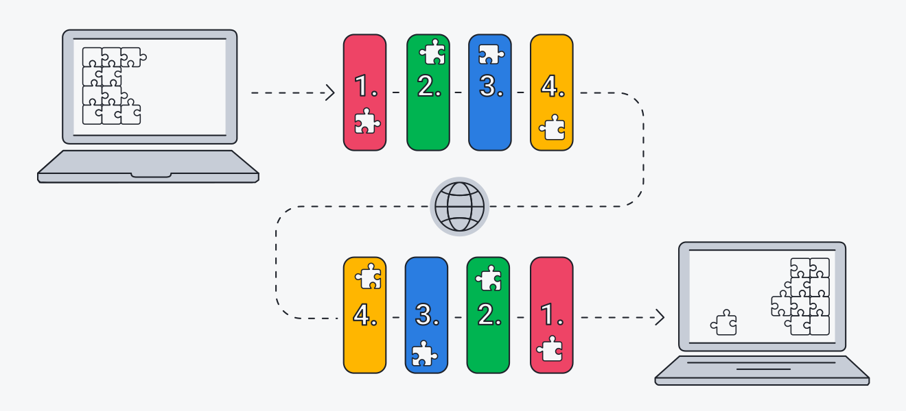
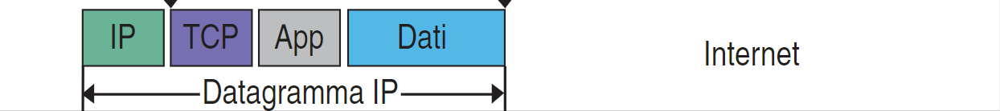
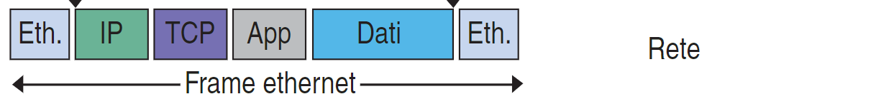

Incapsulamento
Quando un'applicazione invia dei dati utilizzando l'architettura TCP/IP, questi segueono
un percorso "dall'alto verso il basso" attraverso tutti i livelli della pila fino a essere trasmessi
dal livello fisico; ogni livello aggiunge una serie di informazioni di controllo ai primi dati che
riceve, gle header (intestazione), fino a giungere al livello di rete che, come abbiamo visto,
oltre all'intestazione aggiunge anche alcuni dati in coda (il cosidetto trailer).

Imbustamento
si intende l'insieme delle operazioni che ogni livello in spedizione
esegue aggiungendo i dati caratteristici del livello stesso (busta) per poi
spedirli al livello sottostante.
In ricezione ogni livello acquisisce quindi una "busta" contenente dati, grazie alla
quale è in grado di trattare i dati presenti al suo interno: ogni livello tratta come
"dati grezzi" le informazioni ricevute dal livello superiore non distinguendo tra i dati originari
forniti dall'applicativo e gli header (intestazioni) aggiunti dai livelli che essi hanno già attraversato
Ricapitolando
1 - lo strato di applicazione aggiunge un'intestazione (header-app)
ai dati utente prima di passarli allo st rato di trasporto;
2 - il protoccolo TCP (oppure UDP) dello stato di trasporto aggiunge anche'esso
un'intestazione: l'unita di dati prende ora il nome di segmento e viene passato allo strato di rete;
3 - lo strato di rete acclude a sua volta un'intestazione comprendente
l'indirizzo IP: a questo punto il dato assume la denominazione di datagramma IP;

4 - questa unità di informazione viene infine passata ai livelli inferiori, dove lo strato
di collegamento aggiunge la propria intestazione (header) e una coda (trailer): siamo
finalmente arrivati aalla trama (frame ethernet)
